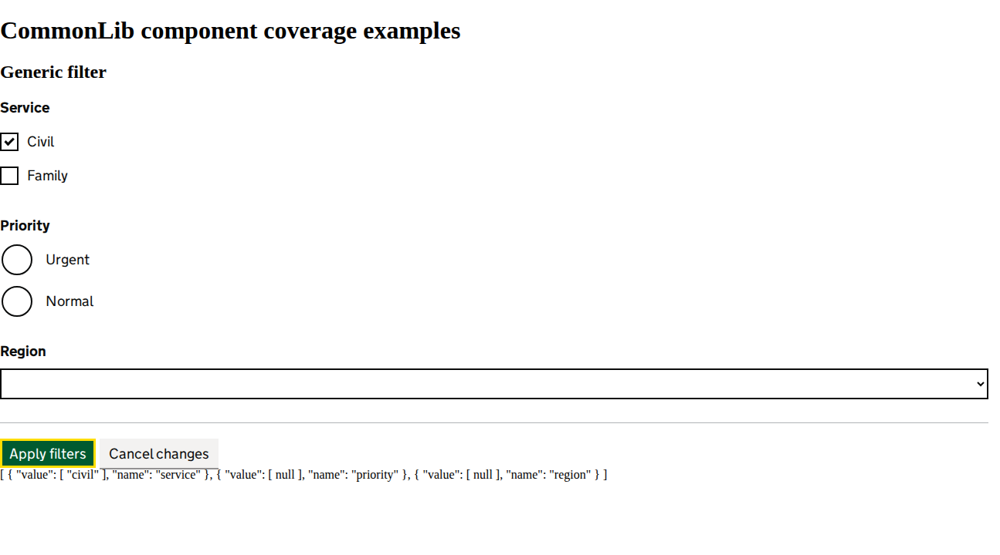

WAVE-like accessibility evidence
0 automated finding(s). These checks include heuristics and conventions, not a WCAG conformance verdict. Match finding numbers to the highlighted page image.
Back to Odhín report
Show highlighted page image

Back to Odhín report